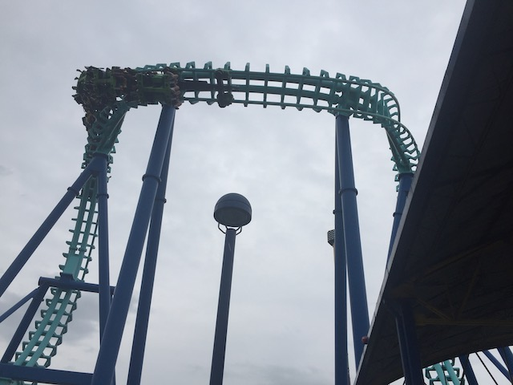

| |
East Coast Trip 2021
Lake Compounce Six Flags New England New York City American Dream Coney Island Six Flags Great Adventure
Casino Pier & Playland's Castaway Cove Dorney Park Cedar Point Kings Island Columbus Zoo & Waldameer Kennywood
Idlewild & Lakemont Park Hersheypark Knoebels
 Once again, I am back at this park far sooner than I expected since my last visit was only 3 years ago. But at least the park has changed since then. So there's something new for me since then.
Once again, I am back at this park far sooner than I expected since my last visit was only 3 years ago. But at least the park has changed since then. So there's something new for me since then.
Yeah. That's the big thing they added since my last visit (also, they demolished two coasters, which you've probably heard me joke about and rip on the park for that in past updates). I wasn't in a huge hurry to get on Orion since....it looks fun. But nothing special. But....it was a priority for other people on this trip since...B&M Giga Coaster (BTW, F*CK the discoure about how it's actually a hyper coaster. BULLSH*T!!! You're all just nitpicking and using a standard that'd exclude A TON of hyper coasters and is only done for the sake of looking to argue with other enthusiasts because they're obnoxious contrarian little twats who wanna feel smug. It is. End of f*cking discussion).
Just in case you forgot the date, the flowers are kind enough to cover for you.
 Yeah. It's the one new thing at the park. So naturally, we have to head here first.
Yeah. It's the one new thing at the park. So naturally, we have to head here first.
Hey. At least there's not a long line for this new (for last year) coaster.
 In a bout of really good news, Orion was A LOT better than I was expecting.
In a bout of really good news, Orion was A LOT better than I was expecting.
OK. It's obviously not as good as Fury 325, but I was honestly expecting this to easily be my least favorite Giga Coaster, and....I'm happy to be proven wrong.
 I think it's because of the layout being not nearly as long as Fury 325 plus all the negative reviews I heard of it including from a friend who rode it last year (This was one of the few for 2020 coasters that actually opened last year). Apparently it's running much better today than last year. Glad to hear that.
I think it's because of the layout being not nearly as long as Fury 325 plus all the negative reviews I heard of it including from a friend who rode it last year (This was one of the few for 2020 coasters that actually opened last year). Apparently it's running much better today than last year. Glad to hear that.
Well, if it starts raining on us, at least we can get more rerides on Flight of Fear in.
Oh, and speaking of Premier Launched Coasters.
 It's not an amazing ride or anything, but it's a little something that's fun and worth a ride if the lines not long.
It's not an amazing ride or anything, but it's a little something that's fun and worth a ride if the lines not long.
 *Sigh* Remember when I was the hot new ride? Yeah. Me too. Stupid Orion stealing my thunder.
*Sigh* Remember when I was the hot new ride? Yeah. Me too. Stupid Orion stealing my thunder.
These folks may look happy now, but just wait until they go into the shed. >=)
Oh look. Kings Island does have a B&M Hyper Coaster after all. It's just not Orion. =P
 Not sure if this is a controversial opinion, but for as much as I liked Orion and how it exceeded my expectations, I do still think Diamondback is *slightly* better.
Not sure if this is a controversial opinion, but for as much as I liked Orion and how it exceeded my expectations, I do still think Diamondback is *slightly* better.
It's just a really strong above average B&M Hyper (Still not the best, but really good).
Ass goes out of seat, ass falls back into seat.
And of course, the ride still has a nice buffet of strong floater air to enjoy.
This is the perfect weather for a water splash.
So you may have noticed these onride photos in the update. Well, Andrew has an onride photo pass, where he can get as many onride photos as he wants. So he just got all the onride photos from all the rides. And I put the ones with me in the update. Thanks dude. It's a nice touch to have these photos, especially with how rarely I get onride photos.
Love these little replicas of the trains specifically of defunct Kings Island coasters.
OK. This ride may not be my favorite, but it's a Kings Island classic that we can't miss.
It may still be just a high speed tour of the middle of nowhere, with a bonus rib-crushing helix at the end, but it's still a lot of fun.
One thing to note is that this ride did seem to get a little rougher over the past years. It's not bad or anything. If anything, it gives the ride more flavor. But just a fair warning for enthusiasts who are more sensitive to that sort of stuff.
So something to note about today was that it was forcasted to rain today. Naturally, I was worried about this since...there's a new B&M Giga and I REALLY don't want to be rained out of that since....that's the ONE new thing for me here. But we couldn't change the dates (plus, me changing dates due to rain forecasts in the past have backfired). So fingers crossed that we're not screwed. Luckily, it all worked. Aside from a few random showers throughout the day, we were fine. And the rain forecasts scared away all the crowds. So hooray for the rain scare! =)
We have to get this. We're in Cincinatti. It's a staple of the city.
I know Skyline Chili and just Cincinatti Chili is controversial as far as food goes. Well good news for you Cincinattians, because this is really good. I know it's generally not popular with outsiders. But...your chili is really good guys. And I say this as someone who generally frowns on Ohio outside of the theme parks. Congrats Ohio. You know have 3 things I like about the state (1. Cedar Point, 2. Kings Island, 3. Skyline Chili). Though I will admit. It's far better in a resteraunt in Cincinatti than at Kings Island.
So another friend, Andrew was doing his own seperate trip and invited us on that. But we were busy with this trip. But hey. Both trips stop at Kings Island. So....we made sure to hit it on the same day to ensure that we could meet up and have a couple fun days together. Really glad we did this since I got to see a lot of enthusiasts whom I hadn't seen in a really long time (Not since the f*cking Northeast Trip 10 years ago. HOLY SH*T!! That was 10 years ago!). So we've got a really big group today.
 Aww. Thanks for offering me a cookie Snoopy. =)
Aww. Thanks for offering me a cookie Snoopy. =)
Hey. Something we can ride for the brief showers that occured today.
Ugh. My score still really sucks on this thing. =(
Final major coaster we need to hit at Kings Island today.
Hello new B&M vest restraints.
I know a lot of other enthusiasts really love Banshee. And it's fun. Better than the more forceless Silver Bullet/Talon Inverts. But it's NOT a return to the old school 90s B&M Inverts.
 Love that they brought back the loop threading the lifthill. Not quite as noticable on an Inverted coaster. But still really cool.
Love that they brought back the loop threading the lifthill. Not quite as noticable on an Inverted coaster. But still really cool.
The other inversions are fun and have some force, but this sadly has no whip. LAME!!!
AHH!!! A BANSHEE STOLE MY SOUL!!! HELP!!!
Don't worry Andrew. They may have bulldozed Vortex, but at least Bat is still here for you to enjoy (Arrow Fanboy).
Really hope S&S can revive this concept cause this ride is just a ton of fun.
This still is one of the best drop towers ever.
I didn't get this since...I really wasn't in the mood for a beer with this sort of weather, plus I was with a really big group and didn't want to drag others down. But in hindsight, I really regret not getting this because....it looks REALLY good (And I'm saying this as someone who normally avoids alcohol in theme parks (at least in America) like the plague due to the price of it). Hopefully they still have this next time I'm here.
Sure. Why not?
You know, cocktease ending aside, this actually is one of the better mine trains. It's certainly much better than Cedar Creek Mine Ride.
Sorry Scott, but my bar totally kicks your bar's ass.
Oh boy! Time for another coaster race!
 Unfortunately, only one side was open. So we couldn't get any racing action. =(
Unfortunately, only one side was open. So we couldn't get any racing action. =(
While we still had fun, by far the most memorable part of the ride was waiting on the brake run. That may sound strange, but we couldn't help but be amused by the kids in front of us. So these kids (who couldn't have been any older than 12) just started screaming at each other in the most filthy ways possible. It honestly felt like I was playing X-Box Live, dropping every swear word imaginable extremely loudly. Honestly, I'm kind of surprised they refrained from using racial slurs considering how preteens tend to act in Middle School (Oh god. Such bad memories) and on X-Box Live. Now if you know me, then you know that I have no fucking problem with swearing (the censors are honestly just a force of habit). But something about these kids just talking such shit like they're in a Middle School cafeteria just really made me laugh.
 All right. Let's get some more rerides on Orion in. BTW, check out our new Orion Review.
All right. Let's get some more rerides on Orion in. BTW, check out our new Orion Review.
Middle of the day, and the line for Orion, the parks new coaster, is only 15 minutes. Man, for a park I've always heard fear-mongering regarding crowds at, I've NEVER had a problem with crowds during ANY of my 3 Kings Islands visits.
So obviously, it's not as good as Fury 325 or I305. But honestly, it's a toss-up when it comes to this vs Millenium Force. I go back and forth between the two.
The first drop is great and really pours on the speed. Still prefer Millenium Force's slightly. But both are top-notch.
However, the airtime, while not great, still seems a little bit stronger than on Millenium Force. Plus, this ride has laterals (Not a lot, but some). Something Millenium Force completly lacks.
But another point for Millenium Force in that....that ride doesn't feel super short. Orion really feels like it cuts itself off right as it's doing really well. It's a shame that it's so short because it could really be something special if they kept it going. And once again, Leviathan is back to being the only Giga coaster I still need (Overdue to go back to Canada's Wonderland).
 Oh yeah. We still haven't hit this ride. Better stop back and hit this up.
Oh yeah. We still haven't hit this ride. Better stop back and hit this up.
 I know it's just a Boomerang inverted, but for some reason, this is just much more fun. Probably due to the smoothness, but the seating also helps (especially with friends).
I know it's just a Boomerang inverted, but for some reason, this is just much more fun. Probably due to the smoothness, but the seating also helps (especially with friends).

So we decided to spice this ride up and try doing it in reverse, starting out backwards, and then going back forwards. It's....trippy. Though I do prefer it the original way.
Good grief. Are we here to do some credit whoring?
Nope. All the credit whores in the big group already had these credits (at least the ones that didn't require a kid) and the ones who didn't all weren't credit whores.
That may be a really fun quirky log flume, but....No. Not in this weather.
Yeah. We totally gotta get more rerides on Diamondback.
YOU FOOLS!!! Why are you heading BACK into the shed!?
Well, thanks for another really fun day Kings Island. Your new coaster was a lot better than I expected and I had a ton of fun riding good coasters and having fun with friends. Looking foreward to coming back another day.
Columbus Zoo & Waldameer
Home
|